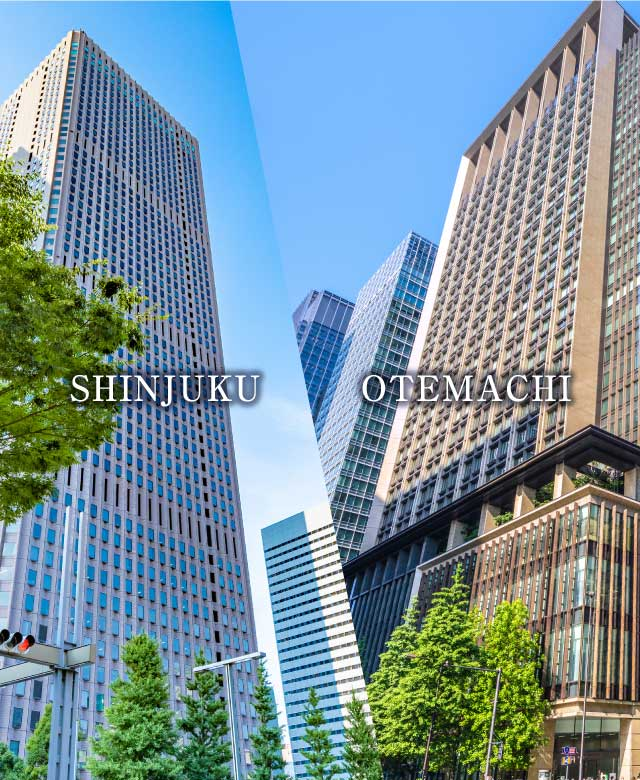
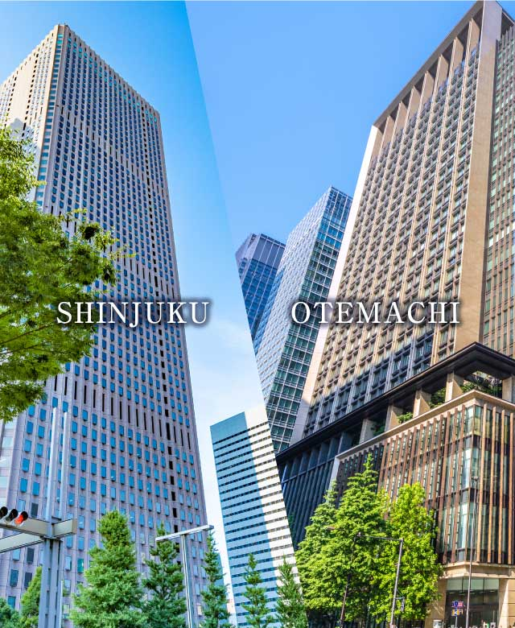
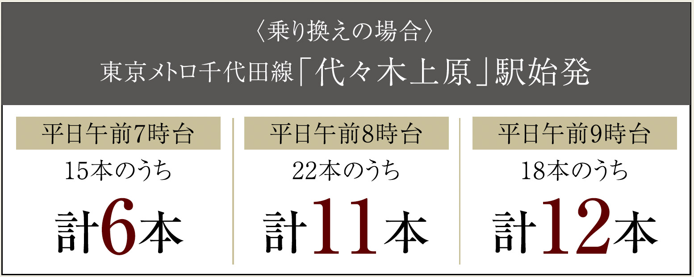

Hello Connected Comfort.
 
image photo
ACCESS
つながる快適へ。
「新宿」へ直通13分（12分）※1。地下鉄線に乗り入れる京王新線、
小田急小田原線の利用で都心エリアにもダイレクトアクセス。
「桜上水」駅から京王線急行利用で「新宿」駅まではわずか3駅。また京王新線と都営新宿線の相互乗り入れで都心へのアクセスもスムーズ。さらにバス利用で小田急小田原線「経堂」駅も利用可能。毎日の通勤、通学も快適です。
提供：京王電鉄
路線図
-
「新宿」駅 直通13分（12分）
image photo
-
「渋谷」駅 18分（14分）
image photo
-
「下北沢」駅 10分（9分）
image photo
-
「吉祥寺」駅 23分（16分）
image photo

KEIO LINE
「新宿」駅へ直通のアドバンテージ。
最寄りの京王線「桜上水」駅（徒歩12分）は急行停車駅。「新宿」駅へ直通13分（12分）※1、「渋谷」駅へは18分（14分）※2でアクセス可能です。
京王線「桜上水」駅より
-
- 「新宿」駅
- 直通13分（12分）
［通勤時］京王線急行利用［日中時］京王線急行利用
-
- 「渋谷」駅
- 18分（14分）
［通勤時］京王線急行利用、「明大前」駅で京王井の頭線に乗換［日中時］京王線急行利用、「明大前」駅で京王井の頭線急行に乗換
-
- 「下北沢」駅
- 10分（9分）
［通勤時］京王線急行利用、「明大前」駅で京王井の頭線に乗換［日中時］京王線急行利用、「明大前」駅で京王井の頭線急行に乗換
-
- 「吉祥寺」駅
- 23分（16分）
［通勤時］京王線急行利用、「明大前」駅で京王井の頭線に乗換［日中時］京王線急行利用、「明大前」駅で京王井の頭線急行に乗換
-
「新宿三丁目」駅 直通18分（16分）
image photo
 -
「市ヶ谷」駅 直通23分（20分）
image photo
-
「九段下」駅 直通24分（23分）
image photo

-
「神保町」駅 直通28分（24分）
image photo

「新宿三丁目」駅：［通勤時］京王線急行利用、「笹塚」駅で京王新線に乗換（都営新宿線直通）［日中時］京王線急行利用（京王新線・都営新宿線直通）、「市ヶ谷」駅：［通勤時］京王線急行利用「笹塚」駅で京王新線に乗換（都営新宿線直通）［日中時］京王線急行利用（京王新線・都営新宿線直通）、「九段下」駅：［通勤時］京王線急行利用（京王新線・都営新宿線直通）［日中時］京王線急行利用（京王新線・都営新宿線直通）、「神保町」駅：京王線急行利用「笹塚」駅で京王新線に乗換（都営新宿線直通）［日中時］京王線急行利用（京王新線・都営新宿線直通）
TOEI SHINJUKU LINE
都心主要駅へ直結の快適性。
京王線に加えて「笹塚」駅へ乗り入れる京王新線と都営新宿線の相互乗り入れで、主要駅へのダイレクトアクセス、主要路線への接続もスムーズ。また「笹塚」駅は京王線、京王新線（都営新宿線）とも同じホームなのでスマートな乗り換えが可能です。
京王線・都営新宿線路線図

経堂コルティ（約1,650m）
ODAKYU LINE
小田急小田原線「経堂」駅、駅前商業施設も利用可能。
小田急小田原線「経堂」駅へは徒歩22分（約1,750ｍ）。自転車利用や、徒歩3分の「八幡山一丁目」バス停、徒歩5分の「希望ヶ丘東公園」バス停からバス利用も可能。駅北口のショッピングセンター「経堂コルティ」へも気軽に行くことができます。

※自転車分数表示については実測（オダクル経堂コルティ駐輪場／起点：現地／計測：2022年9月19日AM10時台）によるものです。但し、天候不順、周辺の交通状況（朝・夕の混雑、交通事故等）等により大幅な遅延が生じる場合があります。
※オダクル経堂コルティ駐輪場（有料）利用。経堂駅北口まで徒歩1分。
※掲載の所要時間は待ち時間・乗り換え時間を含んだ通勤時（カッコ内は平常時）の目安であり、時間帯により多少異なります。
※掲載の情報は2022年7月現在のものです。
※バス乗車分数に関しては「駅すぱあと」調べ。
-
「表参道」駅
直通14分（14分）image photo

-
「赤坂」駅
直通19分（18分）image photo

-
「大手町」駅
直通30分（27分）image photo

「表参道」駅：［通勤時］小田急小田原線通勤準急利用（東京メトロ千代田線直通）［日中時］小田急小田原線準急利用（（東京メトロ千代田線直通）、「赤坂」駅：［通勤時］小田急小田原線通勤準急利用（東京メトロ千代田線直通）［日中時］小田急小田原線準急利用（（東京メトロ千代田線直通）、「大手町」駅：［通勤時］小田急小田原線通勤準急利用（東京メトロ千代田線直通）［日中時］小田急小田原線準急利用（（東京メトロ千代田線直通）
CHIYODA LINE
ビジネスタウンにもつながる利便性。
小田急小田原線「経堂」駅からは相互乗り入れの東京メトロ千代田線も利用可能。表参道、赤坂、霞ヶ関、大手町ほか都心の主要駅へダイレクトにつながります。
東京メトロ千代田線路線図
image photo
CAR ACCESS
主要高速道路へのアクセスもスムーズ。
本物件は主要高速道路へのアクセスも快適です。首都高速4号新宿線へは「永福」入口、中央自動車道へは「高井戸IC」を。また東名高速道路「東京IC」へは環状8号線の利用でスムーズ。都心や遠方へのレジャーも気軽に出かけられます。
カーアクセス図
現地より約2.3kmの首都高4号新宿線「永福」入口から
-
- 「新宿」まで
- 約5分（約04.4km）
-
- 「渋谷」まで
- 約11分（約28.9km）
-
- お台場方面「臨海副都心」まで
- 約21分（約19.6km）
-
- 羽田空港「空港中央」まで
- 約24分（約24.0km）
現地より約4.6kmの東名高速道路「東京IC」入口から
-
- 「みなとみらい」まで
- 約27分（約29.8km）
image photo
-
- 「御殿場」まで
- 約56分（約83.7km）
image photo
image photo
TAXI
都心近接だから、深夜の帰宅もタクシーで気軽に。
■物件までのタクシー料金シミュレーション（概算）
-
- 新宿駅
（西口） -
日中 約3,300円
深夜 約3,960円
- 新宿駅
-
- 渋谷駅
（西口） -
日中 約3,200円
深夜 約3,840円
- 渋谷駅
※1.「桜上水」駅より京王線急行利用
※2.「桜上水」駅より京王線急行利用、「明大前」駅で京王井の頭線急行に乗換
※掲載の電車所要時間は待ち時間・乗り換え時間を含んだ通勤時（カッコ内は平常時）の目安であり、時間帯により多少異なります。
※掲載の路線図は、一部路線・駅等を抜粋して表記しています。
※掲載の所要時間は目安であり、時間帯により多少異なります。※出典:小田急バスHP、京王バスHP（2022年7月現在）
※タクシー料金は、東京23区、武蔵野市、三鷹市、初乗り1096mまで500円、以後255mごとに100円加算、多摩地区、初乗り1200mまで500円、以後257mごとに100円加算で、普通車（中型車）を日中時（深夜は22時～5時）に一般道で利用した場合の参考例です。タクシー会社、走行ルート、交通事情により異なります。タクシーサイト参照。（2023年2月現在）
※掲載のカーアクセス図は、一部、道路・出入口・IC等を抜粋して表記しています
※掲載の距離表示については地図上の概測距離を、高速道路は「ドラぷら（NEXCO東日本）」ホームページにて検索（2022年7月現在）したものです。
※掲載の距離表示については地図上の概測距離を、徒歩分数表示については80ｍを1分として算出し、端数を切り上げたものです。
※掲載の所要時間は、時間帯・交通事情により異なる場合があります。